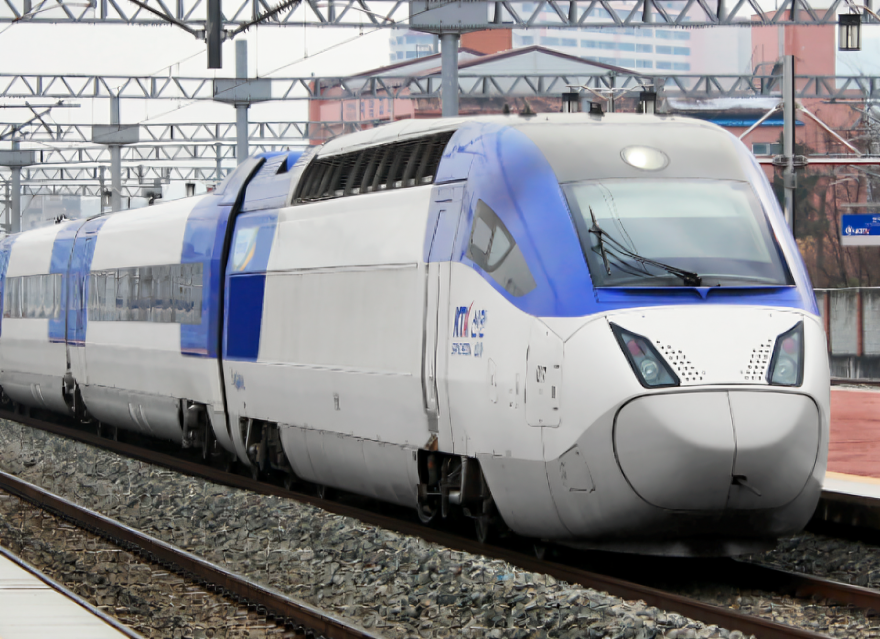
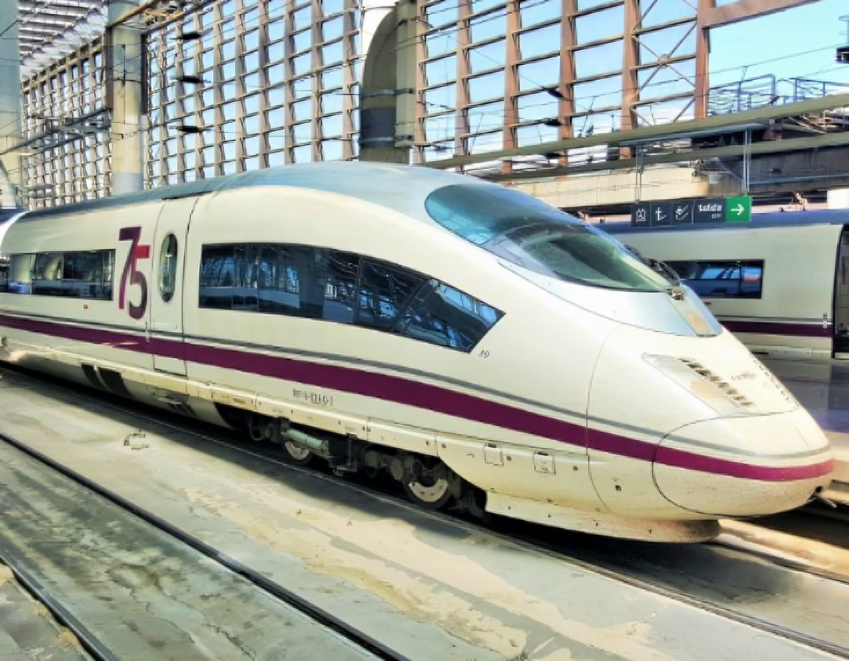

Най-новите влакове
Frecciarossa 1000

Frecciarossa 1000 е гордостта на италианските железници.
Този високоскоростен влак пътува със скорост от 300 км/ч,
а максималната му скорост достига впечатляващите 390 км/ч.
Влакът е известен с луксозния си интериор, който включва
четири класи и безплатен Wi-Fi за всички пътници.
KTX-Sancheon
KTX-Sancheon е вътротно поколение вискоскоростни влакове
в Южна Корея. Той пътува с впечатляваща скорост от 305 км/ч,
а максималната му скорост достига 421 км/ч. Въведен в
експлоатация през 2010 г., KTX-Sancheon е разработен
изцяло в Южна Корея.
Renfe AVE 103
Испанският AVE 103 е един от най-бързите влакове в Европа, пътуващ със скорост от 310 км/ч и достигащ максимална скорост от 404 км/ч. Той е част от мрежата на испанските железници Renfe и обслужва популярни маршрути като Мадрид-Барселона.
Също е известен с точността си и луксозното обслужване.